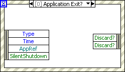

Duplicate items selected in an Event Filter Node
An Event Filter Node has the same data field selected more than once.

You can correct this error in the following ways:
- Right-click the duplicate item, select Select Item from the shortcut menu, and select a different event data field from the shortcut menu.
- Right-click the item and select Remove Element from the shortcut menu.
Before you configure events for the Event structure to handle, review the caveats and recommendations for using events in LabVIEW.